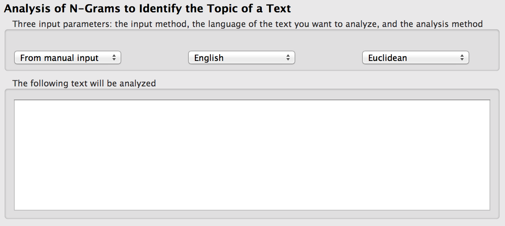

N-Gram Text-Topic Analysis
The "N-Gram Text-Topic Analysis" plug-in aims to identify the topic of a given text. As the name of the plug-in indicates, it is based on an n-gram analysis. The n-gram analysis might be explained using the following sentence: “This is a short sentence.” The 2-grams in this sentence would be then “Th”, “hi”, “is” and so on. The 3-grams are “Thi”, “his”, etc.
It was found out that the best results of identifying a topic are achieved using 2-grams or 3-grams analysis. Since for instance, it would rather not make sense to build a hypothesis based on 8-grams or histograms (1-grams). Here, we used a combination of the 2- and 3-grams distances to build a hypothesis.
Right now, the plug-in supports 5 topics:
- Football news,
- Political news,
- Literature,
- Law, and
- [Board] Game rules.
Plug-in Instructions
The user can setup the following parameters (see the screenshot below):
- Input method:
- Here one can choose the source of the text to be analyzed. By default this parameter is set to From manual input so that the user can easily copy & paste text. The other option is to load the text From file. Furthermore, the user can choose to load a sample text in English or German for easier testing and understanding of the plug-in.
- Language:
- This version of the plug-in supports texts both in English and German languages. More languages are planned to be supported in future versions.
- Analysis method:
- To find out what the topic of the given text is the plug-in calculates the distance between the given text and reference texts. The distance can be calculated by using the following methods: Euclidean or Least Squares. These methods are described in detail in "The Algorithm" section below.

Optionally the user can select one own reference text and see if the topics are identical or not.
The Algorithm
First, the text is converted to the uppercase, and all the spaces are removed. E.g. from our last example “This is a sentence” becomes “THISISASENTENCE”.
Next, the first 50 n-grams (here, as already mentioned before, 2-grams and 3-grams) with the highest frequencies are saved and sorted out in the descending order. Finally, it is compared how different these occurrences are from other references. This is done by using either the Euclidean or the Least Square distance method:
Euclidean:
The distance between two grams i and j is defined as |i – j|. E.g. if the sequence “th” in the given text is on the 1st place and in the reference text political news it is on the 4th place, then the distance between them is |1 – 4| = | – 3 | = 3. In a special case, when e.g. in a given text a specific sequence made it to the top 50 most frequent, but in a reference text not, then the distance is defined as 50 – i + 5, where i is the position of the sequence.
Least Squares:
The main difference to the Euclidean method is that the distances are all squared first and added up. The result is set to the square root of the resulting sum.
It is worth noting that the longer a given text is, the better results one would achieve. The minimum length of the text is 512 characters.
Result field
The following are two guesses of what the topic of the given text might be as a result of the analysis:
(★ ★ ★ ★ ☆) 1st guess: This text deals with the topic Literature.
(★ ★ ☆ ☆ ☆) 2nd guess: This text deals with the topic Football.
How well the guesses are made is displayed using stars. This is explained below:
Rating system
The closer the topic is to one of the reference texts (the smaller distance between the given text and the reference text is), the higher is the rating. In the example above first guess has 4 stars out of 5, whereas the second guess has only 2 stars out of 5. That roughly means that with a very high probability the topic of this text is Literature, and with a lower probability it is Football.
By testing out about 100 texts of different origin it was found out that the distance to the same topic is usually less than 1050. Whereas the distance to a topic that is completely different the distance is higher than 1350. The exact distances and according ratings can be found in the table below:
| Rating |
Distance |
| ★ ★ ★ ★ ★ |
d < 1050 |
| ★ ★ ★ ★ ☆ |
1050 > d > 1150 |
| ★ ★ ★ ☆ ☆ |
1150 > d > 1250 |
| ★ ★ ☆ ☆ ☆ |
1250 > d > 1350 |
| ★ ☆ ☆ ☆ ☆ |
d > 1350 |